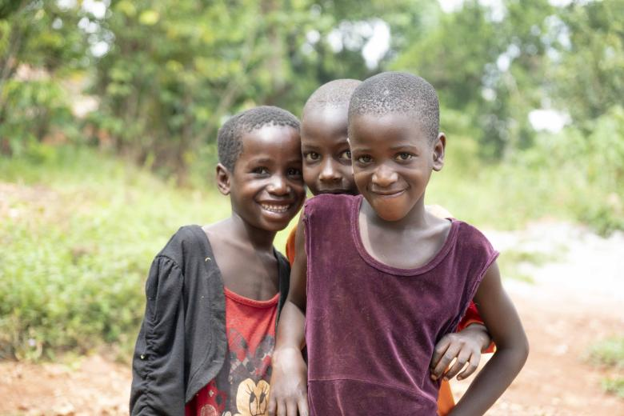
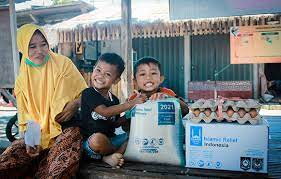
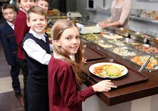
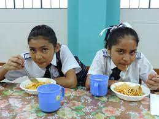

Nuestros Valores
Motivacion:
En nuestro compromiso por crear un mundo más compasivo y justo, hemos encontrado en las donaciones de alimentos una poderosa forma de marcar una diferencia real en la vida de las personas.
Nuestra motivación trasciende las cifras y estadísticas; se origina en un profundo deseo de aliviar el hambre y cultivar la esperanza en las comunidades que servimos. A través de nuestro
programa de donaciones de alimentos, estamos decididos a hacer frente a la inseguridad alimentaria y aportar un rayo de esperanza en momentos de necesidad.
Proposito:
En el corazón de nuestro compromiso con las donaciones de alimentos se encuentra un propósito claro y definido. Nuestro propósito va más allá de la simple acción de proporcionar alimentos;
se centra en el impacto duradero que podemos tener en las vidas de las personas y en la sociedad en su conjunto. Estamos dedicados a nutrir el cambio positivo, abordando la inseguridad
alimentaria y construyendo un futuro en el que todos tengan acceso a una nutrición adecuada y la oportunidad de prosperar.
Acompañamiento:
En nuestro viaje para hacer frente a la inseguridad alimentaria, hemos descubierto que nuestro compromiso va más allá de simplemente proporcionar alimentos. Creemos en la importancia del acompañamiento en cada paso del camino. Nuestra misión no se limita a llenar estómagos, sino a llenar corazones con esperanza y apoyo. A través de un enfoque centrado en el acompañamiento, buscamos construir relaciones significativas y transformadoras con las personas y las comunidades a las que servimos.
NIÑOS
JOVENES
ADULTOS
ADULTOS MAYORES

FAMILIAS
GRUPOS POBLACIONALES
AYUDA HUMANITARIA

TEJIENDO COMUNIDAD

COMEDOR AMIGO

COMEDOR ESCOLAR
INTERNADO
ADULTO MAYOR

JARDIN INFANTIL